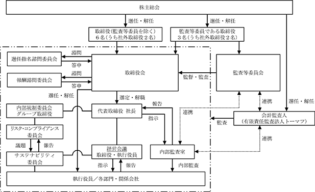

該当事項はありません。
該当事項はありません。
③ 【その他の新株予約権等の状況】
該当事項はありません。
該当事項はありません。
(注) 自己株式の消却による減少であります。
2023年11月30日現在
(注) 自己株式1,142,585株は、「個人その他」に11,425単元、「単元未満株式の状況」に85株を含めて記載しております。なお、自己株式1,142,585株は株主名簿記載上の株式数であり、期末日現在の実質的な所有株式数も1,142,585株であります。
2023年11月30日現在
(注)１ 株式会社日本カストディ銀行の所有株式の内訳は、(信託口)699千株、(信託口４)88千株、(信託Ａ口)24千株、(年金信託口)19千株、(年金特金口)6千株であります。
２ 当社は自己株式を1,142,585株保有しておりますが、上記大株主からは除いております。
３ 2021年７月21日付で公衆の縦覧に供されている大量保有報告書(変更報告書)において、三井住友トラスト・アセットマネジメント株式会社及びその共同保有者である日興アセットマネジメント株式会社が2021年７月15日現在でそれぞれ次のとおり株式を保有している旨が記載されているものの、当社としては2023年11月30日現在における実質所有株式数の確認ができませんので、上記大株主の状況には含めておりません。上記大株主の状況は、株主名簿の記載内容に基づいて記載しております。なお、その大量保有報告書(変更報告書)の内容は次のとおりであります。
４ 2023年５月29日付で公衆の縦覧に供されている大量保有報告書(変更報告書)において、株式会社三菱ＵＦＪ銀行及びその共同保有者である三菱ＵＦＪ信託銀行株式会社並びに三菱ＵＦＪ国際投信株式会社が2023年５月22日現在でそれぞれ次のとおり株式を保有している旨が記載されているものの、当社としては2023年11月30日現在における実質所有株式数の確認ができませんので、上記大株主の状況には含めておりません。上記大株主の状況は、株主名簿の記載内容に基づいて記載しております。なお、その大量保有報告書(変更報告書)の内容は次のとおりであります。
５ 2023年９月21日付で公衆の縦覧に供されている大量保有報告書(変更報告書)において、ノムラ インターナショナル ピーエルシー（ＮＯＭＵＲＡ ＩＮＴＥＲＮＡＴＩＯＮＡＬ ＰＬＣ）及びその共同保有者である野村アセットマネジメント株式会社が2023年９月15日現在でそれぞれ次のとおり株式を保有している旨が記載されているものの、当社としては2023年11月30日現在における実質所有株式数の確認ができませんので、上記大株主の状況には含めておりません。上記大株主の状況は、株主名簿の記載内容に基づいて記載しております。なお、その大量保有報告書(変更報告書)の内容は次のとおりであります。
2023年11月30日現在
2023年11月30日現在
該当事項はありません。
会社法第165条第３項の規定により読み替えて適用される同法第156条の規定に基づく取得
(注)１ 東京証券取引所における市場買付けによる取得であります。
２ 当該決議に基づく自己株式の取得は、上記取得期間での取得をもって終了しております。
(注)１ 東京証券取引所の自己株式立会外買付取引（ToSTNeT-3）による取得であります。
２ 当該決議に基づく自己株式の取得は、上記取得期間での取得をもって終了しております。
会社法第155条第７号の規定に基づく単元未満株式の買取請求による取得
(注) 当期間における取得自己株式には、2024年２月１日からこの有価証券報告書提出日までの単元未満株式の買取による取得株式は含まれておりません。
(注)１ 当期間における処理株式には、2024年２月１日からこの有価証券報告書提出日までの単元未満株式の売渡による処分株式は含まれておりません。
２ 当期間における保有自己株式数には、2024年２月１日からこの有価証券報告書提出日までの単元未満株式の買取による取得株式及び売渡による処分株式は含まれておりません。
当社は、中長期的な企業価値の向上を目指し、財務体質の健全性、資本効率及び株主還元の最適なバランスを図ってまいります。
株主還元につきましては、配当性向30％を目安としておりましたが、2024年11月期以降は、新中期経営計画 P&D 2030の目標に沿い、配当性向40％を目安として健全な財務内容を維持しつつ、安定的かつ継続的な配当に努めるとともに、機動的な自己株式の取得を含めた株主還元の充実に努めてまいります。
当社の剰余金の配当は、中間配当及び期末配当の年２回を基本的な方針としております。配当の決定機関は、中間配当は取締役会、期末配当は株主総会であります。
内部留保は将来につながる新製品、新技術へ向けての研究開発投資や生産能力増強、合理化や高付加価値化へ向けての設備投資等の原資として、今後の業績向上と株主の利益を確保するためには不可欠と考えております。
このような方針のもと、2023年11月期の配当につきましては、１株当たり年間56円（中間28円、期末28円）とさせていただきました。また、2024年11月期の配当につきましては、業績予想に鑑み１株当たり年間58円（中間29円、期末29円）を予定しております。
内部留保資金の使途は財務体質の強化と業績の向上を図り、経営体質の更なる充実と、今後の事業展開に役立てていく所存であります。
なお、当社は中間配当を行うことができる旨を定款に定めております。
(注) 基準日が当事業年度に属する剰余金の配当は、以下のとおりであります。
当社グループにおけるコーポレート・ガバナンスは公正な企業活動を期すとともに、経営の透明性を高め経営システムの効率化とスピードの向上を目的とし、会社の持続的な成長と中長期的な企業価値の向上を図るための仕組みと捉えており、社内外とのゴーイング・コンサーン（事業活動の継続）の共通認識を醸成しながらコーポレート・ガバナンスの充実を重要な経営課題とし、その向上と改善に取り組んでおります。
イ 企業統治の体制の概要
当社は、2024年２月28日開催の第77期定時株主総会の決議を経て、監査役会設置会社から監査等委員会設置会社へ移行しております。この移行により、委員の過半数が社外取締役で構成される監査等委員会が、業務執行の適法性、妥当性の監査・監督を担うことでより透明性の高い経営を実現し、国内外のステークホルダーの期待により的確に応えうる体制の構築を目指すとともに、取締役会の業務執行決定権限を取締役に委任することにより、取締役会の適切な監督のもとで経営の意思決定および執行のさらなる迅速化を図ってまいります。
また、経営と執行の適切な役割分担を図るため執行役員制度を導入しております。
会社の機関の基本説明と機関の内容
当社グループのコーポレート・ガバナンス体制につきましては、以下のようになっており、今後の必要に応じて組織、体制を見直す所存であります。
（当社グループのコーポレート・ガバナンス体制）

a.取締役会
取締役会は、社外取締役２名を含む監査等委員でない取締役６名（定款で８名以内とする旨を定めております。）と社外取締役２名を含む監査等委員である取締役３名（定款で４名以内とする旨を定めております。）からなり、取締役会においてあらかじめ定めた取締役（社外取締役を含む）が議長を務め、当社グループの経営に関する重要事項を報告・審議・決議しております。原則として１ヶ月に１回開催し、必要に応じ随時開催をしております。
なお、当社経営の意思決定及び業務執行機能の分担を明確化し、当社を取り巻く経営環境の変化に対応することを目的として執行役員制度を導入しております。
b.監査等委員会
監査等委員会は、社外取締役２名を含む３名の監査等委員である取締役からなり、原則として１ヶ月に１回開催するとともに、必要に応じ随時開催し、重要事項について、報告・審議・決議しております。監査等委員である取締役は、取締役会のほか経営会議、内部統制委員会に出席し、重要な意思決定の過程及び業務の執行状況の把握に努め、取締役会における議決権の行使を通じて、業務執行の適法性、妥当性の監査・監督を行っております。また、会計に関する事項については、会計監査人から報告を受け、必要に応じて説明を求めるなどして、監査の方法および結果の相当性を確認しております。
c.経営会議
経営会議は、取締役（監査等委員である取締役を含む。）及び執行役員からなり、社長が議長を務め、原則として１ヶ月に１回開催し、グループ全体及び各部門の業務執行に関する重要事項を報告・審議・決定しております。
d.内部統制委員会
社長直属の委員会として設置し、役員、従業員が遵守すべき「行動指針」の策定などコンプライアンス体制の整備及び維持を図っております。
e.リスク・コンプライアンス委員会
当社グループのリスクマネジメントの実効性を高めるために、経営戦略を遂行する上での重点リスクを（コンプライアンスを含め）統合的に管理しております。
f.サステナビリティ委員会
当社グループのサステナビリティに関する議論や中長期的な取り組みが必要なリスクに関する議論及び運用管理を実施しております。
g.選任指名諮問委員会
社外取締役を含む取締役で構成され、取締役及び執行役員の選解任、代表取締役の選解任・後継者プラン、必要な基本方針、基準の策定等について審議し、取締役会に答申、助言・提言を行っております。また、監査等委員会に助言を行っております。
h.報酬諮問委員会
社外取締役を含む取締役で構成され、取締役及び執行役員の報酬について、報酬方針の策定、報酬制度の改定、業績目標の策定等を審議し、取締役会に答申、助言・提言を行っております。また、監査等委員会に助言を行っております。
各機関の構成員は次のとおりであります。（◎は議長、委員長、〇は構成員（〇）は陪席を表しております。）
ロ 内部統制システムの整備の状況
当社は、取締役会の決議により内部統制システム構築の基本方針を定めており、その整備状況は以下のとおりであります。
a.取締役及び使用人の職務の執行が法令及び定款に適合することを確保するための体制
「経営理念」を頂点とした経営理念体系を明文化し、当社及び子会社の取締役及び使用人の職務執行が法令及び定款に適合することを確保するための「行動指針」を制定しております。
当社及び子会社の取締役及び使用人に対して明文化した経営理念体系を配付し、啓蒙に努めるとともに、職務執行に関連する会社規程等の周知など、当社及び子会社におけるコンプライアンスの徹底を図っております。
当社及び子会社の内部統制システムの整備・維持・向上を図るために、内部統制委員会を設置しております。
内部監査室は、当社及び子会社の法令及び社内規程の遵守状況等を監査し、その結果を社長、監査等委員会及び内部統制委員会に報告しております。
また、当社及び子会社の取締役及び使用人が発見した法令違反その他のコンプライアンスに関する事実に迅速に対応できるように通報・相談窓口を設置し、その運用を行っております。
b.取締役の職務の執行に係る情報の保存及び管理に関する体制
取締役の職務の執行に係る記録（取締役会議事録等）については、当社の「文書管理規程」に従い、適切に保存及び管理を行っております。また、取締役の職務執行に係る情報については、当社及び子会社の情報管理に関する情報セキュリティポリシーを「情報セキュリティ基本方針」以下の規程類として体系的に整備し、その適切な運用を図っております。
c.損失の危険の管理に関する規程その他の体制
リスク管理体制の基礎として「リスク管理規程」を定め、リスクの発生を未然に防止するために、内部統制委員会で当社及び子会社のリスク管理体制の構築を行うとともに、経営戦略を遂行する上での重点リスクを統合的に管理するリスク・コンプライアンス委員会を設置し、全社的リスク管理の推進を図っております。また、万一、不測の事態が発生した場合に備えて「危機管理規程」を定め、社長を対策本部長とする対策本部を設置し、損害・影響額を最小限にとどめる体制を整えております。
d.取締役の職務の執行が効率的に行われることを確保するための体制
取締役の職務の執行が効率的に行われることを確保するための体制の基礎として、「取締役会規則」に基づき、毎月１回取締役会を開催し、迅速な意思決定と効率的な業務執行を行っております。
当社の経営戦略に関わる重要事項については事前に社長をはじめとする取締役並びに執行役員によって構成される経営会議において討議を行い、その審議を経て取締役会で意思決定を行っております。
取締役会の決定に基づく業務執行については、「職務権限規程」並びに「稟議決裁規程」において、それぞれの責任者及びその責任、執行手続について定め、業務運営の効率化を図っております。
e.当社及び子会社からなる企業集団における業務の適正を確保するための体制
当社及び子会社は、「行動指針」を共有し、企業集団全体のコンプライアンス体制及びリスク管理体制の構築に努めるとともに、「行動指針」を基礎とした諸規程を定め、自立的に業務の適正を確保するための体制を整備しております。
各子会社は、「関係会社管理規程」に基づき、業務執行状況・財務状況を定期的に当社に報告するとともに、経営の重要な事項については、当社への事前協議等を行うようにしております。
f.監査等委員会の職務を補助すべき使用人に関する事項、その使用人の取締役（監査等委員であるものを除く）からの独立性に関する事項、並びに監査等委員会のその使用人に対する指示の実効性の確保に関する事項
監査等委員会がその職務の執行において補助を必要とした場合は、取締役会と協議の上、専任の使用人もしくは内部監査室等の使用人に職務の執行の補助を委託できるようにしております。
補助使用人が監査等委員会の補助職務を担う場合には、監査等委員会の補助使用人に対する指揮命令に関し、補助使用人の属する組織の上長等の指揮命令を受けないようにしております。
また、監査等委員会の補助使用人についての人事権に係る事項は、事前に監査等委員会の意見を聴取し、同意を得るようにしております。
g.取締役（監査等委員であるのものを除く）及び使用人が監査等委員会に報告をするための体制その他の監査等委員会への報告に関する体制
取締役及び使用人は、その担当する業務執行の状況を監査等委員が出席する取締役会並びに経営会議において報告するようにしております。
会社に著しい損害をおよぼすおそれのある事実、その他重要な事実が起きた場合は、その都度常勤監査等委員を通じて監査等委員会に報告し、さらに内部監査報告、内部通報等のうち重要な事項は適切に報告するようにしております。
また、選定監査等委員は、いつでも必要に応じて、取締役及び使用人に対して報告を求めることができるようにしております。
監査等委員会へ報告を行った当社グループの取締役および使用人に対し当該報告をしたことを理由として不利な取扱いを行うことを禁止しております。
h.その他監査等委員会の監査が実効的に行われることを確保するための体制
監査等委員会は、定期的に代表取締役社長との会合を実施し、対処すべき課題、監査上の重要課題等について意見交換を行っております。
常勤監査等委員は、取締役及び使用人から重要な社内会議の資料、決裁手続きに関する資料の閲覧を求めることができるようにしております。
なお、監査等委員会の職務の執行に生ずる費用等は、当社が負担することにしております。
i.財務報告の信頼性を確保するための体制
当社は、金融商品取引法の求める財務報告に係る内部統制報告制度の円滑かつ効果的な運営を行うために「内部統制規程」を定め、その有効性を継続的に評価するために必要な業務体制を整えております。
j.リスク管理体制の整備の状況
当社のリスク管理体制は、内部統制委員会（リスク・コンプライアンス委員会）において、リスクの分析・評価・対応策の検討等を行い、全社的なリスクマネジメント活動の推進を図っております。
ハ 反社会的勢力排除に向けた基本的な考え方及びその整備状況
a. 反社会的勢力排除に向けた基本的な考え方（基本方針）
当社は、暴力団、暴力団構成員、準構成員、暴力団関係企業、総会屋、社会運動標ぼうゴロ、政治活動標ぼうゴロ、特殊知能暴力集団等の反社会的勢力（以下「反社会的勢力」という）との関係を一切遮断することを基本方針としております。
b. 反社会的勢力排除に向けた整備状況
当社は、反社会的勢力排除のため、以下の内容の体制整備を行っております。
i) 反社会的勢力対応部署の設置
管理本部総務部が担当しております。
ii) 反社会的勢力に関する情報収集・管理体制の確立
当社は、企業防衛対策協議会に加盟しており、関連情報の収集に努めるとともに、関係部署への周知を行っております。
iii) 外部専門機関との連携体制の確立
当社は、東警察署管内企業防衛対策協議会（大阪府）、大阪府暴力追放推進センターに加盟するとともに事業所ごとに不当要求防止責任者を定め、所轄警察署や弁護士等の外部の専門機関と連携を図り、不測の事態に対処する体制を整えております。
iv) 反社会的勢力対応マニュアルの策定
当社は、反社会的勢力による被害を未然に防止することを目的として「不当要求防止対応マニュアル」を定めております。
v) 暴力団排除条項の導入
取引基本契約書等に、反社会的勢力との関係が判明した場合の解約契約条項を規定しております。
vi) その他反社会的勢力を排除するために必要な体制の確立
当社は、「コンプライアンスマニュアル」において以下のとおり定め、定期的な従業員教育を行い、反社会的勢力の排除に努めております。
（一）違法行為や反社会的行為に関わらないよう、基本的な法律知識、社会常識と正義感を持ち、常に良識ある行動に努めます。
（二）反社会的勢力には毅然として対応し、一切関係を持ちません。また、反社会的勢力などから不当な要求を受けた場合、毅然とした態度で接し、金銭などを渡すことで解決を図ったりしません。
（三）会社または自らの利益を得るために、反社会的勢力を利用しません。
（四）反社会的勢力及び反社会的勢力と関係のある取引先とは、いかなる取引も行いません。
ニ 責任限定契約の内容の概要
当社と社外取締役は、会社法第427条第１項の規定に基づき、同法第423条第１項の損害賠償責任を限定する契約を締結しております。当該契約に基づく賠償の限度額は、法令の定める最低責任限度額であります。
また同様に、当社と会計監査人は、会社法第427条第１項の規定に基づき、同法第423条第１項の損害賠償責任を限定する契約を締結しております。当該契約に基づく賠償の限度額は、法令の定める最低責任限度額であります。
当社は、持続的な成長と中長期的な企業価値向上のため、株主をはじめとするすべてのステークホルダーとの協働が必要不可欠であると認識しております。ステークホルダーとの協働を実践するため、経営理念、経営ビジョンに基づき、社会の発展に幅広く貢献する有用で環境や安全に配慮した製品を開発提供し、ステークホルダーの皆さまとともに事業を通じて社会的課題を解決し、企業価値の向上を目指す拠り所となる「行動指針」として定め、ステークホルダーの権利・立場や企業倫理を尊重する企業風土の醸成に努めております。
すべての株主に対して実質的な平等性を確保するとともに、株主がその権利を適切に行使することができるために、適切な適時情報開示を行っております。また、４名の社外取締役を選任（取締役会の社外取締役の割合３分の１以上）し、経営における意思決定・監督体制の強化を図り、コーポレート・ガバナンスが機能する体制整備を行っております。
当社は、資本政策の基本方針を定めるとともに株主等へ当社の基本方針の開示を行っております。
資本政策の基本方針
当社は、中長期的な企業価値の向上を目指し、財務体質の健全性、資本効率及び株主還元の最適なバランスを図ってまいります。
当社は、持続的な成長と中長期的な企業価値の向上に資するため、株主との建設的な対話を行うための方針を定め、適切な対応に努めております。また、株主との建設的な対話を行うために、ディスクロージャー・ポリシーの制定及び適時開示体制を整備しております。
株主との建設的な対話に関する方針
会社の持続的な成長と中長期的な企業価値の向上を目的とし、株主との建設的な対話を促進するため、以下の方針を定めております。
i) 株主との対話においては、担当役員をおき、担当部署を設置しており、管理本部がIR担当部署となっております。
ii) 管理本部の担当役員は、建設的な対話実現のため、社内関係部署と協力して対応を行っております。
iii) 個人面談以外に、半期に１度の会社説明会（機関投資家、個人投資家）や電話取材等を実施し、IR活動の充実を図っております。
iv) 管理本部の担当役員は、対話において把握された株主の意見・懸念について、取締役または経営幹部へフィードバックするとともに、社外取締役にもフィードバックを適時・適切に行い独立・客観的視点から課題認識を共有化しております。
v) 管理本部の担当役員は、対話に際してのインサイダー情報が漏洩することを防止するため、当社が定める『内部者取引管理規程』および『ディスクロージャー・ポリシー』に基づき、情報管理を徹底しております。
当社は、すべてのステークホルダーから正しい理解と信頼を得るために、ディスクロージャー・ポリシーを定め、経営方針、財務状況、事業活動状況、CSR活動等の企業情報を公正、適時適切且つ積極的に開示しております。
⑧ 当社の財務及び事業の方針の決定を支配する者の在り方に関する基本方針
当社は、2008年１月11日開催の当社取締役会において、当社の財務及び事業の方針の決定を支配する者の在り方に関する基本方針（会社法施行規則第118条第３号本文に規定されるものをいい、以下「基本方針」といいます。）を定めており、その内容等は次のとおりであります。
a. 当社の財務及び事業の方針の決定を支配する者の在り方に関する基本方針
当社は、安定的かつ持続的な企業価値の向上が当社の経営にとって最優先課題と考え、その実現に日々努めております。従いまして、当社は、当社の財務及び事業の方針の決定を支配する者は、当社の経営理念、企業価値の様々な源泉、当社を支えるステークホルダーとの信頼関係を十分に理解し、当社の企業価値ひいては株主の皆様の共同の利益を中長期的に確保し、向上させる者でなければならないと考えております。
上場会社である当社の株式は、株主、投資家の皆様による自由な取引に委ねられているため、当社の財務及び事業の方針の決定を支配する者の在り方は、最終的には株主の皆様の意思に基づき決定されることを基本としており、会社の支配権の移転を伴う大量買付けに応じるか否かの判断も、最終的には株主の皆様全体の意思に基づき行われるべきものと考えております。また、当社は、当社株券等の大量買付けであっても、当社の企業価値ひいては株主の皆様の共同の利益に資するものであればこれを否定するものではありません。
しかしながら、事前に当社取締役会の賛同を得ずに行われる株券等の大量買付けの中には、その目的等から見て企業価値ひいては株主の皆様の共同の利益に対する明白な侵害をもたらすもの、株主の皆様に株式の売却を事実上強制するおそれがあるもの、対象会社の取締役会が代替案を提案するための必要十分な時間や情報を提供しないもの、対象会社が買収者の提示した条件よりも有利な条件をもたらすために買収者との協議・交渉を必要とするものなど、対象会社の企業価値ひいては株主の皆様の共同の利益を毀損するおそれをもたらすものも想定されます。
当社は、このような当社の企業価値や株主の皆様の共同の利益に資さない大量買付けを行う者が、当社の財務及び事業の方針の決定を支配する者として不適切であり、このような者による大量買付けに対しては、必要かつ相当な対抗措置を採ることにより、当社の企業価値ひいては株主の皆様の共同の利益を確保する必要があると考えております。
b. 当社の基本方針の実現に資する特別な取組み
ア 当社の企業価値の源泉
当社は、1946年12月の設立以来、アクリル酸の国内における製造・販売の企業化に初めて成功し、その製造技術を基に特殊アクリル酸エステルの製造・販売を行っています。当社は、その独自の技術力を活かし、有機工業薬品として幅広い分野へ中間体原料を提供しております。
当社の企業価値の源泉は、高度の研究開発力を活かした高付加価値製品拡大を可能とするフレキシブルな工場稼動体制・供給体制及び営業・研究開発の連動による少量・多品種の生産体制を活かした、多様なお客様の幅広いご要望に対するスピーディーな対応力にあると考えています。さらに、顧客、取引先、当社従業員及び地域社会等の様々なステークホルダーとの間で、長年にわたり良好な関係の維持・発展に努め、企業価値の源泉となる信頼関係を築き上げてまいりました。これらの企業価値の源泉を基に、上記a.記載の基本方針に示したとおり、企業価値ひいては株主の皆様の共同の利益の確保・向上を目指しております。
イ 企業価値ひいては株主の皆様の共同の利益の確保・向上のための取組み
当社は、アクリル酸エステル製品の製造・販売を軸に事業展開をしてまいりました。具体的には、塗料・粘接着剤・印刷インキ・合成樹脂等の原料としてのアクリル酸エステル製品を安定収益基盤とする一方、このアクリル酸エステル製品を発展的に応用展開した表示材料や半導体材料を中心とする電子材料分野を利益成長事業として強化しております。
当社は、これらの事業を基に、企業価値の向上ひいては株主の皆様の共同の利益の確保・向上を実現するための経営戦略として、2015年11月期を起点とする10ヶ年の長期経営計画「Next Stage 10」を１年前倒しで終了し、2024年11月期を起点とする７ヶ年の新中期経営計画「Progress ＆ Development 2030」を策定いたしました。この計画に沿い研究開発・市場開発・生産体制及び経営基盤の強化を行うことにより計画達成を目指すものであります。
さらに、「企業の社会的責任の実現と企業価値の向上」を目指し、当社は、コーポレート・ガバナンスの充実が重要課題であると認識しております。
当社グループにおけるコーポレート・ガバナンスは公正な企業活動を期すとともに、経営の透明性を高め経営システムの効率性とスピードの向上を目的とし、かつ、会社の持続的な成長と中長期的な企業価値の向上を図るための仕組みと捉えており、社内外とのゴーイング・コンサーン（事業活動の継続）の共通認識を醸成しながらコーポレート・ガバナンスの充実を重要な経営課題とし、その向上と改善に取り組んでおります。具体的には、取締役会の透明性を高め、監督機能を強化するため、2024年２月28日開催の第77期定時株主総会の決議を経て、監査役会設置会社から監査等委員会設置会社へ移行し。独立社外取締役を４名選任しております。さらに、独立社外取締役が委員長を務め、委員の過半数を独立社外取締役で構成する選任指名諮問委員会及び報酬諮問委員会を設置しております。また、当社の企業価値の持続的な向上を図るインセンティブを与えるとともに、株主の皆様との一層の価値共有を進めることを目的として、譲渡制限付株式報酬制度及び業績連動型株式報酬制度を導入しております。
当社は、中長期的な企業価値の向上を目指し、財務体質の健全性、資本効率及び株主還元の最適なバランスを図ることを資本政策の基本方針としており、株主還元につきましては、配当性向40％を目安とし、健全な財務内容を維持しつつ、安定的かつ継続的な配当に努め、また、自己株式の取得を含めた株主還元の充実に努めてまいります。
これらの取組みは、上記a.記載の基本方針の実現に資するものと考えております。
c. 基本方針に照らして不適切な者によって当社の財務及び事業の方針の決定が支配されることを防止するための取組み
当社は、当社の企業価値及び株主共同の利益の確保・向上に取り組むとともに、当社株式等の大量買付行為を行おうとする者に対し、株主の皆様が当該行為の是非を適切に判断するための必要かつ十分な情報の提供を求め、併せて取締役会の意見等を開示し、株主の皆様の検討のための情報と時間の確保に努め、金融商品取引法、会社法その他関連法令に基づき、適切な措置を講じてまいります。
なお、当社は、2008年２月22日開催の当社第61期定時株主総会の決議により「当社株券等の大量買付行為への対応策（買収防衛策）」（以下、「本プラン」といいます。）を導入し、継続してまいりました。しかし、2020年１月24日開催の当社取締役会において、本プランを継続しないことを決議したため、本プランは2020年２月27日開催の当社第73期定時株主総会終結の時をもって、有効期限満了により終了しております。
d. 上記b.及びc.の取組みに対する取締役の判断及びその理由
当社取締役会は、上記b.及びc.の取組みについて、合理的かつ妥当な内容であり、上記a.の基本方針に沿い、株主の皆様の共同の利益を損なうものではなく、当社の会社役員の地位の維持を目的とするものではないと判断しております。
⑨ 企業統治に関するその他の事項
当社の取締役（監査等委員であるものを除く。）は８名以内、監査等委員である取締役は、４名以内とする旨を定款に定めております。
当社は、取締役の選任決議について、監査等委員とそれ以外の取締役とを区別し、議決権を行使することができる株主の議決権の３分の１以上を有する株主が出席し、その議決権の過半数をもって行う旨及びその選任決議は、累積投票によらない旨を定款に定めております。
a. 自己株式の取得
当社は、機動的な資本政策の遂行を可能にするため、会社法第165条第２項の規定に基づき、取締役会の決議によって市場取引等により自己株式を取得することができる旨を定款に定めております。
b. 中間配当
当社は、株主への適時適正な利益還元を可能にするため、取締役会の決議によって毎年５月末日を基準日として中間配当をすることができる旨を定款に定めております。
c. 取締役の責任免除
当社は、取締役が職務の遂行にあたり期待された役割を十分に発揮できるようにするため、会社法第427条第１項の規定により、取締役（取締役であった者を含む）の賠償責任について、善意でかつ重大な過失が無い場合には、法令の定める限度額の範囲内で、取締役会の決議によって免除することができる旨を定款に定めております。
当社は、会社法第309条第２項に定める株主総会の決議は、定款に別段の定めがある場合を除き、議決権を行使することができる株主の議決権の３分の１以上を有する株主が出席し、その議決権の３分の２以上をもって行う旨を定款に定めております。
これは、株主総会における特別決議の定足数を緩和することにより、株主総会の円滑な運営を行うことを目的とするものであります。
当社は、当社および子会社の取締役、監査役、執行役員および管理職を被保険者として会社法第430条の３第１項に規定する役員等賠償責任保険（以下、「D&O保険」といいます。）契約を締結しております。
D&O保険契約では、被保険者である役員等がその職務の執行に関し責任を負うこと、または、当該責任の追及に係る請求を受けることによって生ずることのある損害について填補することとされています。ただし、法令違反の行為であることを認識して行った行為に起因して生じた損害は填補されないなど、一定の免責事由があります。
D&O保険の保険料は、特約部分も含め会社が全額負担しており、被保険者の負担はありません。
⑩ 取締役会の活動状況
当事業年度において当社は取締役会を合計16回開催（原則として、毎月１回開催）しました。取締役会では、経営目標・事業計画、重要な投資、資本政策、内部統制システム、サステナビリティ、報酬関係、人事関係、決算及び株主総会に関する事項等が検討されたほか、業務執行状況の報告が行われました。なお、個々の取締役の出席状況は以下のとおりです。
⑪ 選任指名諮問委員会の活動状況
当事業年度において当社は選任指名諮問委員会を合計３回開催（原則として、年３回開催）しました。選任指名諮問委員会では、取締役及び執行役員の選解任、代表取締役の選解任・後継者プラン等について審議し、取締役会に答申、助言・提言を行いました。また、監査役会に助言を行いました。なお、個々の委員の出席状況は以下のとおりです。
⑫ 報酬諮問委員会の活動状況
当事業年度において当社は報酬諮問委員会を合計４回開催（原則として、年３回開催）しました。報酬諮問委員会では、取締役・執行役員及び監査役の報酬について、金銭、賞与、株式報酬等を審議し、取締役会に答申、助言・提言を行いました。また、監査役会に助言を行いました。なお、個々の委員の出席状況は以下のとおりです。
男性
(注)１ 2024年２月28日開催の第77期定時株主総会において定款の変更が決議されたことにより、当社は同日付をもって監査等委員会設置会社に移行しております。
２ 取締役 濵中孝之、榎本直樹、吉田恭子、高瀬朋子の各氏は、社外取締役であります。
３ 取締役（監査等委員である取締役を除く。）の任期は、2023年11月期に係る定時株主総会終結の時から2024年11月期に係る定時株主総会終結の時までであります。
４ 監査等委員である取締役の任期は、2023年11月期に係る定時株主総会終結の時から2025年11月期に係る定時株主総会終結の時までであります。
５ 当社は、法令に定める監査等委員である取締役の員数を欠くことになる場合に備え、補欠の監査等委員である取締役２名を選出しております。補欠の監査等委員である取締役の略歴は以下のとおりであります。
(注) 補欠の監査等委員である取締役の任期は、就任した時から退任した監査等委員である取締役の任期の満了の時までであります。
② 社外役員の状況
当社の監査等委員でない社外取締役は、濵中孝之、榎本直樹の２名であります。両氏と当社との間に、特記すべき人的関係、資本的関係又は取引関係その他の利害関係はありません。濵中孝之氏がパートナーであるはばたき綜合法律事務所と当社との間に、特記すべき人的関係、資本的関係又は取引関係その他の利害関係はありません。榎本直樹氏が社外監査役である株式会社アドバネクス及び同氏が顧問である株式会社南都銀行と当社との間に、特記すべき人的関係、資本的関係又は取引関係その他の利害関係はありません。濵中孝之氏は、弁護士として法律に関する相当程度の知見を有しております。榎本直樹氏は、財務省や経済産業省などにおける業務経験に基づく豊富な経験と高い見識を有しております。
当社の監査等委員である社外取締役は、吉田恭子、高瀬朋子の２名であります。両氏と当社との間に、特記すべき人的関係、資本的関係又は取引関係その他の利害関係はありません。吉田恭子氏が代表である吉田公認会計士事務所及び同氏が社外取締役（監査等委員）であるエスペック株式会社と当社との間に、特記すべき人的関係、資本的関係又は取引関係その他の利害関係はありません。高瀬朋子氏がパートナーであるアーカス総合法律事務所と当社との間に、特記すべき人的関係、資本的関係又は取引関係その他の利害関係はありません。吉田恭子氏は、公認会計士として財務及び会計に関する相当程度の知見を有しております。また、高瀬朋子氏は、弁護士として法律に関する相当程度の知見を有しております。
当社は、社外取締役の選任にあたり、独立性に関する基準を定めております。また、会社法第２条第15号及び第16号を参考に、監督に必要な経営に関する幅広い知識・経験、又は監査に必要な法令、会計等の専門的な知見を有し、一般株主との利益相反が生じるおそれがないことを基本的な考えとして選任しております。
③ 社外取締役による監督又は監査と内部監査、監査等委員会監査及び会計監査との相互連携並びに内部統制部門との関係
社外取締役は、現経営陣から独立した立場で、取締役会及び経営会議に出席し適宜発言を行うとともに、他の役員と意見交換を行っております。また、社外取締役は、内部統制委員会に出席することで、内部統制に関する報告を受け、情報の共有を行い適宜意見を述べております。
(3)【監査の状況】
① 監査等委員会監査の状況
当社は、2024年２月28日開催の第77期定時株主総会の決議を経て、監査役会設置会社から監査等委員会設置会社へ移行しております。
当社の監査等委員会は、監査等委員である取締役３名で構成されており、うち２名が社外取締役であります。監査等委員である取締役は全員、取締役会のほか経営会議、内部統制委員会に出席し、重要な議案について取締役および執行役員等から十分な報告を受け、内部統制システム等を活用して、取締役の職務執行を監視・監査できる体制を整えております。なお、社外取締役の吉田恭子は、公認会計士・税理士として専門的な見識、経験を持ち、財務および会計に関する相当程度の知見を有しております。
監査等委員会設置会社移行前の当事業年度において、各監査役の監査役会および取締役会への出席状況については次のとおりです。
監査役は全員、取締役会のほか経営会議、内部統制委員会に出席し、取締役等から経営上の重要事項に関する説明の聴取等を行い、必要に応じて意見を述べる等、取締役の職務執行の監査を行っております。
常勤監査役は、予算会議等の重要な会議にも出席し、業務執行が合理的な経営判断に基づいているかを確認するとともに、議事録や稟議書等の重要な書類を閲覧のほか、取締役等へのヒアリングを随時実施するなど日常的に当社グループの内部統制や潜在的リスクに関する情報を収集し、経営の意思決定プロセスと結果の確認、並びに法定開示資料の内容を確認しております。
代表取締役社長とは定期的な意見交換の場を設け、経営方針、グループ全体の重要課題やリスク認識について確認し、意見交換を行っております。代表取締役社長との意見交換には、社外監査役も出席しております。
また、当事業年度は、重点監査項目とした法令遵守体制の改善状況について、内部監査部門（内部監査室）と連携して確認しております。
会計監査人とは、社外監査役も出席して、期初に監査計画の説明を受け、期中に適宜監査状況を聴取し、期末に監査結果の報告を受けるなど、密接な連携を図りました。なお、当事業年度の「監査上の主要な検討事項（ＫＡＭ）」については、コミュニケーションスケジュールに従い、記載事項について十分に意見交換を行っており、会計監査人による監査の方法及び結果の相当性の判断や、会計監査人の品質管理体制、会計監査人の監査環境の適正性を確認しております。
毎月取締役会の後に開催される監査役会では、監査方針・監査計画の策定、監査報告の作成、会計監査人の評価、選解任、および報酬への同意等のほか、取締役会での審議事項についての意見交換を行っております。常勤監査役は、上記の監査活動の内容について適宜、報告し、社外監査役との情報共有を行っております。
② 内部監査の状況
当社における内部監査は、内部監査室（３名）が監査計画に基づき、次に掲げる内部監査を実施し、社長および内部統制委員会に報告を行っております。また、監査等委員会および会計監査人とは、内部監査の状況、内部統制評価の内容について随時意見交換を行うなど、密接な連携を図っております。
イ、当社および子会社における業務の適正性、法令遵守状況に関する業務監査
ロ、財務報告に係る内部統制の評価
有限責任監査法人トーマツ
b．継続監査期間
2007年以降
指定有限責任社員 業務執行社員 奥村 孝司（当該事業年度を含む継続関与年数２年）
指定有限責任社員 業務執行社員 渡邊 徳栄（当該事業年度を含む継続関与年数１年）
当社の会計監査業務に係る補助者は、公認会計士７名、その他24名であります。
監査役会は「会計監査人の解任または不再任の決定の方針」を定めており、会計監査人が会社法第340条第１項各号に定める項目に該当すると認められる場合、監査役全員の同意により、会計監査人を解任いたします。この場合、監査役会が選定した監査役は、解任後最初に招集される株主総会において、会計監査人を解任した旨およびその理由を報告いたします。
また、監査役会は、会計監査人の監査品質、監査実施の有効性および効率性、継続年数などを勘案し、会計監査人の変更が必要であると認められる場合には、株主総会に提出する会計監査人の解任または不再任に関する議案の内容を決定いたします。
監査役会は、上記の方針を踏まえ、「会計監査人の評価及び選定基準」を定めており、その基準に基づき、会計監査人の品質管理体制、監査計画や監査活動等の適正性を評価しております。当事業年度における評価結果に問題はないと判断し、会計監査人を再任いたしました。
監査役会は、「会計監査人の評価及び選定基準」を定めており、その基準に基づき、会計監査人の品質管理体制、監査計画や監査活動等の適正性を評価しております。当事業年度における評価結果に問題はないと判断しました。
a. 監査公認会計士等に対する報酬
b．監査公認会計士等と同一のネットワークに対する報酬
該当事項はありません。
c. その他の重要な監査証明業務に基づく報酬の内容
該当事項はありません。
該当事項はありませんが、規模・特性・監査日数等を勘案した上で決定しております。
e. 監査役会が会計監査人の報酬等に同意した理由
本項目における記載は、監査等委員会設置会社に移行前の当事業年度の状況を記載しております。
監査役会は、会計監査人（有限責任監査法人トーマツ）の監査計画の内容、職務遂行状況および報酬の見積りの算出根拠などを確認し、過去の監査実績および報酬の推移に照らして検討した結果、報酬額は妥当と判断し、同意いたしました。
(4)【役員の報酬等】
①役員の報酬等の額又はその算定方法の決定に関する方針に係る事項
当社は、経営理念に則り、中長期的な業績の拡大と企業価値の向上を実現するため、取締役の報酬体系と報酬水準を決定しております。
当社は、2024年２月28日開催の第77期定時株主総会の決議を経て、監査役会設置会社から監査等委員会設置会社へ移行しております。
役員の報酬等に関して、株主総会において以下のとおり決議されております。
取締役（監査等委員である取締役を除く。）の報酬については、2024年２月28日開催の第77期定時株主総会において年額３億６千万円以内（うち、社外取締役分は９千万円）（ただし、使用人分給与は含まない。）（当該定時株主総会終結時の取締役（監査等委員である取締役を除く。）の員数は６名（うち、社外取締役は２名））、監査等委員である取締役の報酬については、2024年２月28日開催の第77期定時株主総会において年額６千万円以内（当該定時株主総会終結時の監査等委員である取締役の員数は３名（うち、社外取締役は２名））と決議されております。また別枠で2024年２月28日開催の第77期定時株主総会において、譲渡制限付株式報酬として取締役（社外取締役及び監査等委員である取締役を除く。）に対し年額１千万円以内（ただし、使用人分給与は含まない。）（当該定時株主総会終結時の取締役（社外取締役及び監査等委員である取締役を除く。）の員数は４名）、同じく別枠で2024年２月28日開催の第77期定時株主総会において、業績連動型株式報酬として取締役（社外取締役及び監査等委員である取締役を除く。）に対し年40,000株以内（当該定時株主総会終結時の取締役（社外取締役及び監査等委員である取締役を除く。）の員数は４名）と決議されております。
なお、役員退職慰労金制度は、2018年２月27日開催の第71期定時株主総会の終結の時をもって廃止しております。
取締役（社外取締役及び監査等委員である取締役を除く。）の報酬は、基本報酬となる月額報酬、業績連動報酬となる年次賞与、業績連動型株式報酬及び譲渡制限付株式報酬で構成されております。また、社外取締役及び監査等委員である取締役につきましては、その役割と独立性の観点から、基本報酬となる月額報酬のみとしております。
＜基本報酬と業績連動報酬の支給割合＞
＜報酬決定プロセス＞
役員の報酬等の額又はその算定方法の決定に関する方針は、社外取締役を議長とする報酬諮問委員会にて審議し、取締役会にて承認・決定しております。
当事業年度の取締役の個人別の報酬等の内容につきましては、報酬諮問委員会が決定した方針に基づき、同委員会にて審議し答申したうえで、最終的に取締役会で決定をしており、取締役会においても当該方針に沿うものであると判断しております。
当事業年度の役員の報酬等の額の決定過程における取締役会、報酬諮問委員会及び監査役会の活動内容は以下のとおりであります。
なお、2024年11月期の役員の報酬等の額の決定過程における取締役会、報酬諮問委員会及び監査等委員会の活動内容は以下のとおりであります。
②役員区分ごとの報酬等の総額、報酬等の種類別の総額及び対象となる役員の員数
③役員ごとの連結報酬等の総額等
連結報酬等の総額が１億円以上である者が存在しないため、記載しておりません。
(5)【株式の保有状況】
当社は、保有目的が「純投資目的である投資株式」と「純投資目的以外の目的である投資株式」の区分について、純投資目的とは専ら株式の価値変動や株式に係る配当によって利益を受けることを目的とする場合と考えております。一方、純投資目的以外とは当社の顧客及び取引先等との安定的・長期的な取引関係の維持・強化や当社の中長期的な企業価値向上に資する場合と考えております。なお、「純投資目的である投資株式」は現在保有しておりません。
当社は、顧客及び取引先等との安定的・長期的な取引関係の維持・強化や、当社の中長期的な企業価値向上に値する等、当該株式を保有する高度の合理性があると判断される場合に限り、株式の保有を行います。
保有する株式については、定期的に取締役会へ報告し、個別銘柄ごとに取引関係の維持・強化、中長期的な保有メリット及び保有に伴う便益やリスクが資本コストに見合っているか等を総合的に勘案し、保有の適否を検討しております。
当事業年度においては、2023年１月の取締役会にて、2022年11月末時点で保有する株式について個別銘柄ごとに過去５年間の事業取引金額及び保有による便益やリスクと資本コスト（WACC）との比較検証を行いました。また、検証結果に基づき、一部株式の売却を検討の上、実行いたしました。
特定投資株式
(注)１ 保有先企業は当社の株式を保有しておりませんが、同社の子会社が当社の株式を保有しております。
２ 定量的な保有効果は記載が困難であるため、記載しておりません。なお、保有の適否に関する検証については、「ａ．保有方針及び保有の合理性を検証する方法並びに個別銘柄の保有の適否に関する取締役会等における検証の内容」に記載しております。
３ 東京応化工業㈱は、2023年12月31日を基準日として2024年１月１日付で普通株式１株を３株とする株式分割を行っております。
４ 信越化学工業㈱は、2023年３月31日を基準日として2023年４月１日付で普通株式１株を５株とする株式分割を行っております。
５ 凸版印刷㈱は、2023年10月１日付でＴＯＰＰＡＮホールディングス㈱に商号変更しております。
６ 東洋インキＳＣホールディングス㈱は、2024年１月１日付でａｒｔｉｅｎｃｅ㈱に商号変更しております。
みなし保有株式
該当事項はありません。
該当事項はありません。
該当事項はありません。
該当事項はありません。